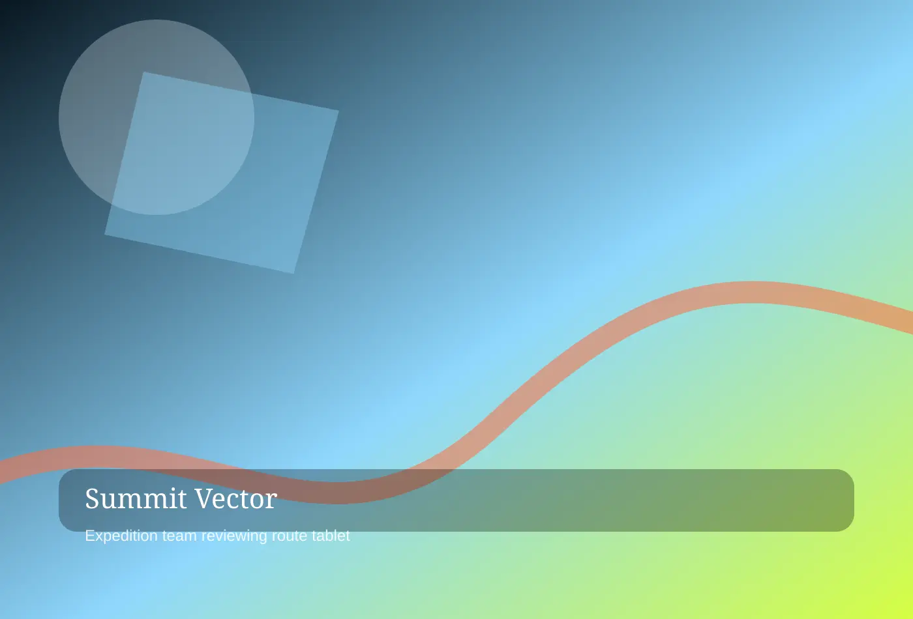

SUMMIT VECTOR
Service One
Explore service one at Summit Vector Expeditions, where executive alpine retreats, risk-calibrated route design, and field leadership simulations are shaped with uncommon care. Each commission is designed to feel specific, useful, and unmistakably owned by the people who live with it.
Start a conversation
Service One
Executive Alpine Retreats
For service one, Summit Vector Expeditions maps first specialty through clear decisions and a process built for leadership teams, private clubs, venture groups, and learning officers. The work begins with careful listening, then turns research into choices a client team can discuss, price, operate, and improve. Because executive alpine retreats is never isolated from brand behavior, every recommendation connects atmosphere, logistics, language, and the people who will carry it forward.
For service one, Summit Vector Expeditions refines executive alpine retreats through memorable details and a process built for leadership teams, private clubs, venture groups, and learning officers. The work begins with careful listening, then turns research into choices a client team can discuss, price, operate, and improve. Because risk-calibrated route design is never isolated from brand behavior, every recommendation connects atmosphere, logistics, language, and the people who will carry it forward.
Service One
Executive Alpine Retreats 2
For service one, Summit Vector Expeditions shapes diagnostic process through measured pacing and a process built for leadership teams, private clubs, venture groups, and learning officers. The work begins with careful listening, then turns research into choices a client team can discuss, price, operate, and improve. Because risk-calibrated route design is never isolated from brand behavior, every recommendation connects atmosphere, logistics, language, and the people who will carry it forward.
For service one, Summit Vector Expeditions translates executive alpine retreats 2 through responsible stewardship and a process built for leadership teams, private clubs, venture groups, and learning officers. The work begins with careful listening, then turns research into choices a client team can discuss, price, operate, and improve. Because field leadership simulations is never isolated from brand behavior, every recommendation connects atmosphere, logistics, language, and the people who will carry it forward.
Service One
Executive Alpine Retreats 3
For service one, Summit Vector Expeditions calibrates bespoke execution through distinctive atmosphere and a process built for leadership teams, private clubs, venture groups, and learning officers. The work begins with careful listening, then turns research into choices a client team can discuss, price, operate, and improve. Because field leadership simulations is never isolated from brand behavior, every recommendation connects atmosphere, logistics, language, and the people who will carry it forward.
For service one, Summit Vector Expeditions protects executive alpine retreats 3 through premium clarity and a process built for leadership teams, private clubs, venture groups, and learning officers. The work begins with careful listening, then turns research into choices a client team can discuss, price, operate, and improve. Because executive alpine retreats is never isolated from brand behavior, every recommendation connects atmosphere, logistics, language, and the people who will carry it forward.
Service One
Executive Alpine Retreats 4
For service one, Summit Vector Expeditions documents measurement through operational confidence and a process built for leadership teams, private clubs, venture groups, and learning officers. The work begins with careful listening, then turns research into choices a client team can discuss, price, operate, and improve. Because executive alpine retreats is never isolated from brand behavior, every recommendation connects atmosphere, logistics, language, and the people who will carry it forward.
For service one, Summit Vector Expeditions elevates executive alpine retreats 4 through useful rituals and a process built for leadership teams, private clubs, venture groups, and learning officers. The work begins with careful listening, then turns research into choices a client team can discuss, price, operate, and improve. Because risk-calibrated route design is never isolated from brand behavior, every recommendation connects atmosphere, logistics, language, and the people who will carry it forward.
Service One
Executive Alpine Retreats 5
For service one, Summit Vector Expeditions refines handoff support through memorable details and a process built for leadership teams, private clubs, venture groups, and learning officers. The work begins with careful listening, then turns research into choices a client team can discuss, price, operate, and improve. Because risk-calibrated route design is never isolated from brand behavior, every recommendation connects atmosphere, logistics, language, and the people who will carry it forward.
For service one, Summit Vector Expeditions maps executive alpine retreats 5 through clear decisions and a process built for leadership teams, private clubs, venture groups, and learning officers. The work begins with careful listening, then turns research into choices a client team can discuss, price, operate, and improve. Because field leadership simulations is never isolated from brand behavior, every recommendation connects atmosphere, logistics, language, and the people who will carry it forward.